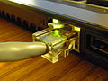

File:Ethernet Connection.jpg
{kind=link}
Size of this preview: 800 × 600 pixels. Other resolutions: 320 × 240 pixels | 640 × 480 pixels | 1,024 × 768 pixels | 1,280 × 960 pixels | 2,592 × 1,944 pixels.
{kind=link}
{kind=link}
{kind=link}
{kind=link}
{kind=link}
Original file (2,592 × 1,944 pixels, file size: 1.77 MB, MIME type: image/jpeg)
Summary[edit]
{kind=link}
| Description |
中文（简体）: 一台连接了以太网的笔记本电脑
English: A laptop with Ethernet connection
|
| Date | |
| Source | Template:Revathi |
| Author | Someone's Moving Castle |
Licensing[edit]
{kind=link}
|
I, the copyright holder of this work, hereby publish it under the following license:
|
File history
Click on a date/time to view the file as it appeared at that time.
| Date/Time | Thumbnail | Dimensions | User | Comment | |
|---|---|---|---|---|---|
| current | 04:31, 20 May 2013 |  | 2,592 × 1,944 (1.77 MB) | Someone's Moving Castle | User created page with UploadWizard |
File usage
The following pages on the English Wikipedia link to this file (pages on other projects are not listed):
Global file usage
The following other wikis use this file:
- Usage on bn.wikipedia.org
- Usage on cs.wikipedia.org
- Usage on kn.wikipedia.org
- Usage on ko.wikipedia.org
- Usage on ml.wikipedia.org
- Usage on pa.wikipedia.org
- Usage on pl.wiktionary.org
- Usage on sco.wikipedia.org
- Usage on te.wikipedia.org
- Usage on vi.wikipedia.org
- Usage on zh-yue.wikipedia.org
- Usage on zh.wikipedia.org
{kind=link}
{kind=link}
{kind=link}
{kind=link}
{kind=link}